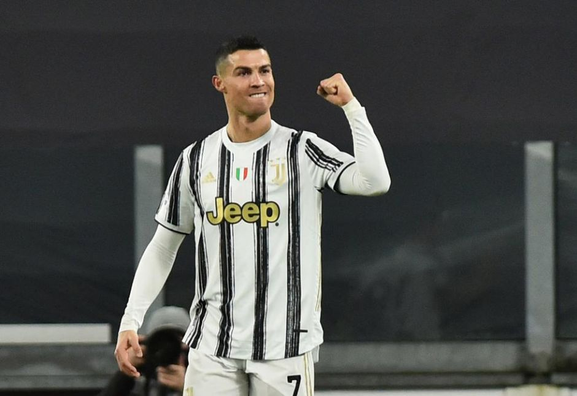
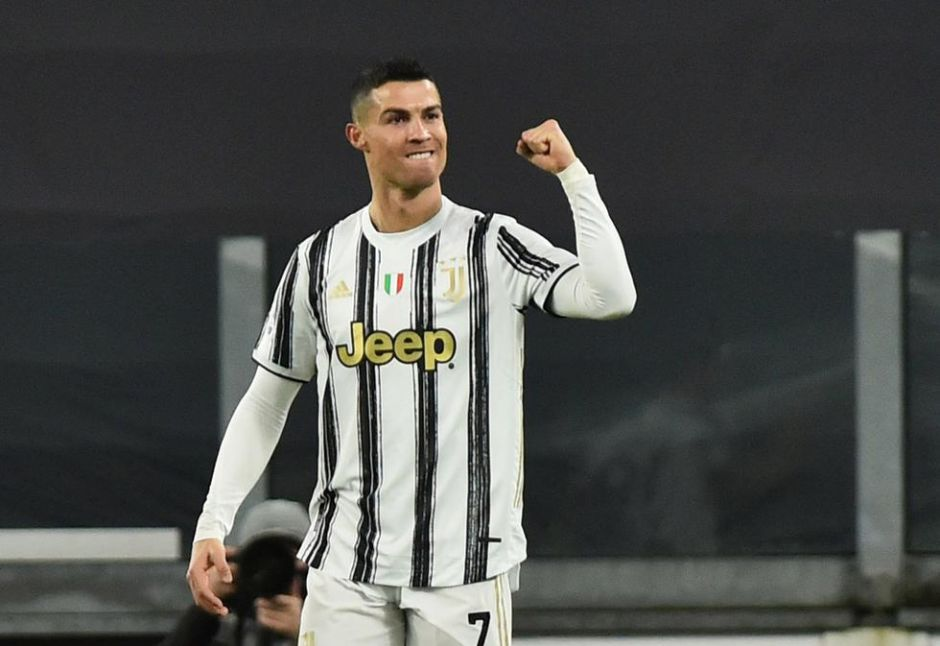

Despre
Cristiano Ronaldo dos Santos Aveiro cunoscut ca Ronaldo, este un fotbalist portughez, care evoluează în prezent la clubul Juventus Torino și la echipa națională de fotbal a Portugaliei.
Ronaldo este considerat unul din cei mai buni fotbaliști din toate timpurile,[4][5][6][7][8][9][10][11] alături de rivalul său Lionel Messi. Este primul fotbalist portughez care a câștigat Balonul de Aur de cinci ori,[12][13] și al doilea jucător după Messi care câștigă Gheata de aur de trei ori. La Manchester United și Real Madrid, Ronaldo a câștigat de trei ori Premier League, La Liga, FA Cup, de două ori Football League Cup și Copas del Rey, FA Community Shield, Supercupa Spaniei, de 5 ori Liga Campionilor UEFA, o Supercupa Europei și de trei ori Campionatul Mondial al Cluburilor FIFA.
În ianuarie 2014, la vârsta de 28 de ani, Ronaldo a marcat cel de-al 400-lea său gol la nivel de seniori.[14] În ianuarie 2015 el a fost numit cel mai bun fotbalist portughez din toate timpurile, de către Federația Portugheză de Fotbal, în cadrul celei de-a 100-a ceremonii aniversare.[15][16]
Ronaldo și-a început cariera de fotbalist la juniorii echipei Andorinha, pentru care a jucat timp de doi ani, fiind transferat ulterior de C.D. Nacional. În 1997 a ajuns la Sporting Lisabona, fiind promovat la echipa mare de Ladislau Bölöni. Jocul său i-a atras atenția antrenorului de atunci al lui Manchester United, Alex Ferguson, care l-a adus la echipă în schimbul a 12,2 milioane de lire sterline. În 2004 a câștigat primul trofeu, Cupa FA. În 2009 a devenit cel mai scump transfer din toate timpurile, Real Madrid plătind pentru el 94 de milioane de euro (80 de milioane de lire sterline).[17]
Ronaldo a debutat pentru Portugalia în august 2003, la vârsta de 18 ani. Are peste 100 de selecții și a fost convocat, începând cu Euro 2004, la trei Campionate Europene și alte trei Mondiale. Este primul fotbalist portughez care a înscris mai mult de 50 de goluri și este golgheterul Campionatului European (incluzând faza calificărilor) cu 23 de goluri.
Pe 14 octombrie 2019, într-un meci cu Ucraina, încheiat 1-2, Ronaldo a înscris din penalti golul cu numărul 700 din carieră.
Biografie
Cristiano Ronaldo s-a născut în Santo António, un cartier al orașului Funchal, Madeira, Portugalia. Este fiul Mariei Dolores dos Santos Aveiro și al lui José Dinis Aveiro (n. 1954, Londra - 5 septembrie 2005). Are un frate mai mare, Hugo (n. 1975), precum și două surori mai mari, Elma (n. 1974) și Liliana Cátia (n. Madeira, 5 octombrie 1976). Liliana Cátia este o cântăreață cu numele de scenă Lorenzo în Portugalia. Al doilea nume al lui Cristiano (Ronaldo) este relativ rar în Portugalia. Părinții l-au numit astfel în cinstea fostului președinte american Ronald Reagan.[18] Încă din copilărie tatăl său l-a înscris la un club sportiv, iar la vârsta de 14 ani, Ronaldo s-a înțeles cu părinții să-și concentreze cariera pe fotbal.[19]
Cariera de club
A început să joace fotbal de mic copil. Când a început școala, la șase ani, pasiunea lui pentru acest sport devenise evidentă. La vârsta de 8 ani Ronaldo juca la echipa de amatori, Andorinha, unde tatăl său se ocupa de echipament. În 1995 Ronaldo a semnat cu clubul local Nacional și după o campanie care a avut drept rezultat câștigarea titlului, Ronaldo a participat la un trial de trei zile la Sporting Lisabona, care l-a achiziționat pentru o sumă care nu a fost făcută publică.[20]
Echipe la care a activat
Cariera internationala
Pe data de 20 august 2003 are prima prezență în echipa națională de fotbal a Portugaliei, într-o victorie a naționalei lusitane cu 1-0 împotriva Kazahstanului.[57].
Ronaldo marchează primul său gol împotriva Greciei, la Euro 2004.
Stilul de joc
Considerat pe larg drept unul din cei mai buni doi fotbaliști din lume din generația sa (alături de Lionel Messi)[58][59] și unul din cei mai buni jucători din istoria fotbalului,[60] Cristiano Ronaldo joacă într-un mod ofensiv, fie pe postul de atacant,[61] sau de mijlocaș,[62] și este cunoscut pentru abilitățile sale bune de finalizare, pasare, driblare, poziționare, alergare, dar și pentru o bună executare a loviturilor libere.[63][64] El este capabil să joace atât pe extreme, cât și în centrul terenului, ceea ce-l face un atacant versatil, capabil să joace pe orice poziție ofensivă.[65]
Tactic, Ronaldo joacă un puternic rol ofensiv, adesea trecând de pe flancul stâng în centrul în timp ce se află în posesia balonului.[66] Este cunoscut ca având o cugetare limpede, cu o bună viziune a jocului, prevăzând diferite scenarii și posedând reacții rapide, oportunism, echilibru și agilitate.[66] Deși este dreptaci, el poate controla balonul, sprinta și finaliza și cu piciorul stâng.[66]
Ronaldo este cunoscut (mai ales) pentru accelerația sa, tehnicitate, control al balonului și abilități de dribling, dar și pentru perspicacitatea de a învinge jucătorul advers în situații de „unu la unu”.[61] Un marcator prolific, este capabil să finalizeze atât din interiorul suprafeței, cât și de la distanță, cu un șut precis și puternic.[63][67] Este un bun executant de penalty și un specialist la lovituri libere directe.[68] Înălțimea, forța, abilitatea de a sări și tehnica de a lovi cu capul îl avantajează în a câștiga luptele aeriene pentru balon, multe din golurile sale fiind înscrise cu capul.[61][69] A fost considerat unul dintre cei mai rapizi fotbaliști din lume în 2014.[70]
De la venirea sa la Manchester United, Ronaldo a suferit transformări corporale substanțiale, căpătând un corp atletic, musculos care îl ajută mult în jocul său.[71]
Ronaldo a avut câteva schimbări de tactică în cariera sa. În timp ce juca la Sporting Lisabona, și apoi în primul sezon la Manchester United, el practica mai mult un stil de mijlocaș "clasic", pe flancul drept de la mijlocul terenului. Adesea a întreprins incursiuni cu driblinguri individuale.[66] În pofida talentului său, a fost criticat de antrenorul Alex Ferguson, colegi și media pentru egoism și un stil prea arogant.[72][73] Pe durata următoarelor sezoane a devenit mai mult un „jucător de echipă” de cât individual, jucând și un rol mult mai creativ pentru echipă, devenind un playmaker.[66] În sezonul 2006-07 el a oferit 19 pase decisive în toate competițiile.[74] În ultimul sezon petrecut la Manchester United, el a jucat și mai prolific în atac, atât pe poziție de atacant cât și ca „al doilea vârf”, sau mijlocaș ofensiv ocazional.[66]
La Real Madrid, Ronaldo a continuat să joace un rol mai ofensiv în echipă, depășindu-și abilitățile de marcator, în dauna creativității și sarcinilor defensive.[66] Eficiența sa la Real Madrid a fost condiționată și de faptul că echipa excela în jocul pe contra-atac.[75] Deși inițial a fost centrul atacului, mai târziu el a fost mutat înapoi pe flancul stâng, dar cu un rol tactic liber, care-l făcea mult mai greu de oprit de către fundași și îi permitea să înscrie mai des.[76][77]
Ronaldo a fost criticat un timp pentru „plonjările” sale în timp ce i se făcea tacklinguri, fapt despre care José Mourinho a spus "Cristiano este un jucător care nu are cultura plonjării, el nu are cultura simulării, el este un jucător de școală engleză, antrenat de Ferguson.".[78]
Viata personala
Tatăl său a decedat din cauza alcoolului în septembrie 2005 la vârsta de 52 de ani, când Ronaldo avea doar 20 de ani.[80][81] O lună mai târziu Ronaldo a fost acuzat că ar fi violat o femeie în Londra, fiind arestat,[82] iar apoi a fost eliberat fiind declarat nevinovat.[83]
Pe data de 3 iulie 2010 a anunțat pe conturile sale oficiale de Facebook și Twitter că a devenit tată.[84][85] Fiul său, numit la fel Cristiano și alintat de familie ”Cristianinho”,[86] s-a născut în Statele Unite,[87] iar Ronaldo a anunțat că fiul va rămâne în custodia sa.[84] Ronaldo nu a făcut publică niciodată identitatea mamei fiului său.[88]
Anterior Ronaldo a mai avut relații cu fotomodelele engleze Alice Goodwin[89] și Gemma Atkinson, iar din 2010[90] până în ianuarie 2015 a fost într-o relație cu fotomodelul rus Irina Shayk.[91] Cristiano Ronaldo este romano-catolic.[92] El a declarat că nu își face tatuaje întrucât donează sânge frecvent.[93]